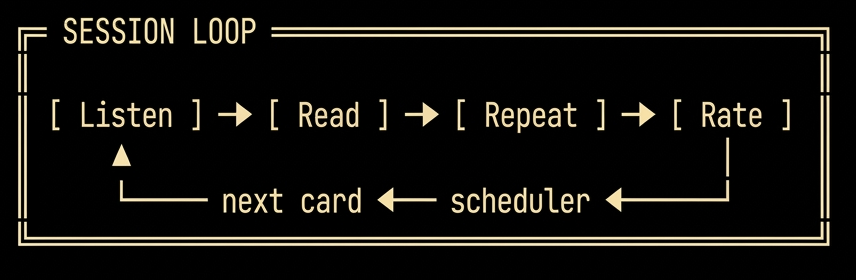
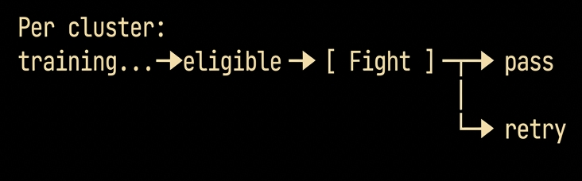

Überblick
FlashBoss ist eine Desktop-Terminal-Anwendung zum Vokabelerwerb. Sie verbindet einen Spaced-Repetition-Scheduler, konstruierte Beispielsätze mit Sprachausgabe, thematische Inhalts-Cluster und einen Bossfight-Abschlussmechanismus. Das System ist darauf ausgelegt, rezeptive Fertigkeiten — Lesen, Hören und Verstehen — in der Zielsprache zu entwickeln.
Ein einzelnes Core-Pack enthält 1.000 Karten und liefert rund 10.000 Wörter zielsprachlichen Input im Kontext. Die Pareto-Erweiterungspacks fügen jeweils etwa 20.000 Wörter hinzu, aufgebaut rund um den häufigsten noch nicht abgedeckten Wortschatz. Unterstützte Sprachen sind Englisch, Deutsch, Spanisch, Italienisch und Esperanto.
Inhaltsarchitektur
Dieser Abschnitt beschreibt die interne Struktur, die allen FlashBoss-Packs gemeinsam ist. Die Organisation auf Pack-Ebene — wie Packs zusammenspielen und wie sich fremdsprachige Packs von den englischen unterscheiden — ist in Abschnitt 4 dokumentiert.
Karte
Jede Karte trägt bis zu fünf Textfelder und zwei Audio-Assets. Nur die zielsprachlichen Felder werden vertont:
| Feld | Inhalt | TTS |
|---|---|---|
Zielwort | Die trainierte Vokabel. In Sprachen mit Genus trägt sie ihren Artikel, farbcodiert nach Genus. | Ja |
Übersetzung | Die Bedeutung des Zielworts in der Muttersprache des Lernenden. | Nein |
Beispielsatz | Ein konstruierter Satz, der das Zielwort in einen Kontext setzt und nur Wortschatz verwendet, den der Scheduler bereits eingeführt hat. | Ja |
Beispielübersetzung | Eine idiomatische Wiedergabe des Beispielsatzes in der Muttersprache des Lernenden. | Nein |
Notizen | Etymologie, eine grammatische Anmerkung, ein zweites Beispiel oder eine Synonymgruppe. Optional. | Nein |
Die Sprachausgabe wird nur auf die zielsprachlichen Felder angewendet. Diese Asymmetrie ist beabsichtigt: Ziel ist es, den Lernenden in der Phonologie der Zielsprache zu sättigen, während das muttersprachliche Gerüst still und unaufdringlich bleibt.
Cluster
Ein Cluster ist eine thematische Gruppe von Karten — die Fortschrittseinheit in FlashBoss. Cluster werden gemeinsam eingeführt, gemeinsam trainiert und gemeinsam über einen einzigen Bossfight abgeschlossen. Cluster-Themen sind konkret und eng gefasst: Zahlen und Zeit, Reise und Unterkunft, Regionale Küche, Soziale Rollen und Menschen.
Stufe
Cluster liegen innerhalb von Stufen. Ein Core-Pack enthält fünf Stufen, die jeweils typischerweise rund acht Cluster umfassen. In fremdsprachigen Packs ist die Stufenzugehörigkeit eine Schwierigkeitsschranke: Sie bestimmt, welche Grammatikstrukturen in den Beispielsätzen eines Clusters vorkommen dürfen. Beispielsätze der Stufe 3 sind auf Präsens, Imperativ und Präteritum beschränkt; Stufe 4 fügt Imperfekt und Konditional hinzu; Stufe 5 öffnet die volle Grammatik einschließlich Konjunktiv. In den englischen Packs wird das Stufensystem thematisch statt syntaktisch genutzt — die Stufenzugehörigkeit spiegelt den Themenbereich wider (z. B. Formulare und Dokumente, Soziales und E-Mail, Verwechselbare Wörter) statt grammatischer Komplexität.
Lektion
Lektionen sind Referenzseiten, die an bestimmte Karten geheftet sind — Begleitmaterial, das eine Karte durch das Training begleitet. Wenn eine Karte mit zugehöriger Lektion zum ersten Mal erscheint, erscheint die Lektion daneben. Jedes Mal, wenn die Karte nach dem Spaced-Repetition-Zeitplan wieder auftaucht, taucht die Lektion mit ihr auf. Lektionen sind daher dauerhafte Referenz, keine einmaligen Einblendungen. Wer den Inhalt einer Lektion verinnerlicht hat, kann sie einzeln deaktivieren: Die Karte wird weiter trainiert, die Lektion erscheint nicht mehr.
Meister
Bevor das Training beginnt, wählt der Lernende einen Meister — die Leitfigur, die das tägliche Tempo vorgibt. Ein Meister legt die Streak-Vorgabe fest: die Anzahl der Karten, die täglich fällig sind, um den Streak am Leben zu halten — von 8 bis 34 Karten, etwa 5 bis 30 Minuten Lernzeit.
| Meister | Temperament | Karten / Tag |
|---|---|---|
| 🐺 Luna — sanft, ermutigend | Bestimmend | 8 |
| ⚫ Claude — analytisch, präzise | Beratend | 13 |
| 🐉 Shen — streng, direkt | Bestimmend | 13 |
| 🦉 Odiin — ermutigend, freundlich | Beratend | 21 |
| 🦊 Kitsune — verspielter Schelm | Beratend | 34 |
| 🦅 Aquila — edel, diszipliniert | Bestimmend | 34 |
Wie anspruchsvoll ein Meister ist, hängt an dieser Tageszahl. Odiin ist mit einundzwanzig Karten der anspruchsvollste Meister, der einem neuen Lernenden empfohlen wird — der hohe Weg. Die beiden Vierunddreißig-Karten-Meister, Kitsune und Aquila, liegen darüber: ein Tempo für Wiederholungsdurchgänge und für Ausnahmefälle, die das Maximum wollen.
Das Temperament eines Meisters ist eine andere Sache und steuert genau eines — das Grimoire. Ein bestimmender Meister begrenzt die Grimoire-Sessions, ein Schutz davor, zu weit vorzupreschen und auszubrennen. Ein beratender Meister warnt, dass eine weitere unklug ist, tritt dann beiseite und lässt es geschehen. Ansonsten sind die beiden identisch.
Die Zuordnung ist ungleichmäßig. Sowohl das Dreizehn- als auch das Vierunddreißig-Karten-Tempo gibt es in beiden Temperamenten — Claude (beratend) oder Shen (bestimmend) bei dreizehn, Kitsune (beratend) oder Aquila (bestimmend) bei vierunddreißig —, dort werden Tempo und Stil also getrennt gewählt. Das Acht-Karten-Tempo gehört allein Luna (bestimmend), das mit einundzwanzig allein Odiin (beratend).
Pack-Struktur
Ein Pack ist die Vertriebseinheit von FlashBoss: ein eigenständiger Wortschatzsatz — typischerweise 1.000 Karten — mit eigener Cluster-Struktur, Stufenstruktur und Lektionsbibliothek. Packs erscheinen je nach Sprache nach zwei verschiedenen Paradigmen.
Fremdsprachige Packs: kumulative Drei-Pack-Progression
Deutsch, Spanisch, Italienisch und Esperanto erscheinen jeweils als Dreier-Sequenz: Core, Pareto 1 und Pareto 2. Die Progression ist kumulativ — jedes Pack setzt den in den vorherigen Packs eingeführten Wortschatz voraus und baut darauf neue Beispielsätze auf. Beispielsätze in Pareto 1 schöpfen aus dem Core-Wortschatz plus den neuen Zielwörtern von Pareto 1; Pareto 2 setzt beide vorherigen Packs voraus. Wer alle drei abschließt, erreicht einen rezeptiven Wortschatz von 3.000 Karten in der Zielsprache.
Die Stufennummerierung läuft über die gesamte Sequenz durch. Core deckt die Stufen 1–5 ab. Pareto 1 und Pareto 2 verlängern die Sequenz zusammen um zehn weitere Stufen: Stufe 6 ist die erste Pareto-Stufe, Stufe 15 die letzte.
GER-Ziele pro Pack:
| Pack | Karten | Ziel |
|---|---|---|
Core | 1.000 | A1–A2-Grammatik-Exposition; bereitet auf A2-Immersionsunterricht vor. |
Pareto 1 | 1.000 | Hochfrequenter B1–B2-Wortschatz; erweitert um Register, die in Core fehlen (Reise, Behörden, Soziales). |
Pareto 2 | 1.000 | B2–C1-Wortschatz; formale Konnektoren, abstrakte Register, kulturelle Inhalte. |
Englische Packs: einzelne Standalones
Englisch erscheint anders. Jedes englische Pack ist ein in sich geschlossener Wortschatzsatz mit 1.000 Wörtern, und Lernende wählen Packs nach Niveau und Interesse, statt sie der Reihe nach abzuschließen. Es gibt keine kumulative Progression — der Abschluss eines englischen Packs setzt kein anderes voraus. Die englischen Packs gliedern sich in zwei strukturelle Familien:
- Niveau-Packs — Wortschatz, der die Lesenden ein Niveau höher zieht und dort lässt. English Adept, das kostenlose Hub-Pack, umspannt den längsten Aufstieg: Es setzt unterhalb des Leseniveaus einer achten Klasse an und führt die Lernenden bis zur Studierfähigkeit, mit Abschluss um C1. English Advance zielt auf das praktische Englisch, um sich uneingeschränkt in der Gesellschaft zu bewegen: die Formulare, Briefe, Behördengänge und Alltagsdokumente, die das Erwachsenenleben verlangt. Der Leitgedanke: einmal richtig erledigen, und du musst nie wieder daran denken.
- Die Roots-Reihe — kostenpflichtige Packs, die englischen Wortschatz über seine drei etymologischen Schichten trainieren: German Roots (angelsächsisch), Norman Roots (normannisch-französisch) und Latin Roots (gelehrt). Querverweise zwischen den dreien bringen die historischen Dubletten zum Vorschein, die dem Englischen sein Registersystem geben.
Session-Struktur und Planung
Eine Trainings-Session führt jede Karte durch fünf Phasen. Die ersten vier laufen pro Karte; die fünfte pro Cluster.


Hören
Die Piper-Sprachausgabe spielt das Zielwort ab, während es auf dem Bildschirm erscheint. Wenn der Lernende bereit ist, zeigt ein Tastendruck den Beispielsatz an und spricht ihn aus. Das ist der erste Kontakt.
Lesen
Bei jedem Schritt festigt das laute Mitlesen des ausgesprochenen Materials das Gedächtnis und verbessert Aussprache und Sprechsicherheit der Lernenden. Danach bleibt Zeit, den Satz zu analysieren, mit der Übersetzung abzugleichen und die Grammatik im Kontext aufzunehmen.
Wiederholen
Sobald die Übersetzung erscheint, werden die Wiederhol-Steuerungen verfügbar: Enter spielt das Zielwort erneut ab, 6 den Beispielsatz. In dieser Phase sind beliebig viele Wiederholungen möglich; der Lernende geht weiter, wenn er bereit ist.
Bewerten
Der Lernende bewertet sein Wiedererkennen auf einer sechsstufigen Skala (0 bis 5). Die Bewertung verschiebt die Position der Karte in einer Folge von Fibonacci-Intervallen (1, 2, 3, 5, 8, 13, 21 … Tage), wobei pro Bewertung ein Mindestintervall als Untergrenze gilt. Bewertung 0 ist ein Sonderfall — ein Zurücksetzen auf 1 Tag, unabhängig von der vorherigen Position der Karte.
| Bewertung | Bedeutung | Intervalländerung |
|---|---|---|
0 | Komplett vergessen. | Zurück auf 1 Tag. |
1 | Sehr schwach. | Position −3 (mindestens 1 Tag). |
2 | Schwach. | Position −2 (mindestens 2 Tage). |
3 | Okay. | Position −1 (mindestens 3 Tage). |
4 | Gut. | Keine Änderung (mindestens 5 Tage). |
5 | Perfekt. | Position +1 (mindestens 8 Tage). |
Die Skala ist so geeicht, dass Fortschritt eine strenge Bewertung verlangt. Nur eine 5 bringt eine Karte voran; 4 hält die Position; 1 bis 3 schieben die Karte im Fibonacci-Zeitplan zurück; 0 setzt sie auf 1 Tag zurück. Die Mindestintervalle pro Bewertung verhindern, dass das Intervall einer Karte bei einer schlechten Bewertung zusammenbricht, und sie verankern die Meisterungsregel.
Karten-Meisterung
Eine Karte gilt nach zwei aufeinanderfolgenden 5er-Bewertungen als gemeistert. Der Mechanismus ist direkt: Eine einzelne 5 hebt das Mindestintervall der Karte auf 8 Tage; eine zweite 5 bringt es auf 13 Tage — die Meisterungsschwelle. Von jeder Ausgangsposition aus tragen zwei perfekte Abrufe in Folge eine Karte also bis zur Meisterung.
Tägliche Sessions
Neue Karten werden einzeln in Cluster-Reihenfolge ins Deck gezogen; Cluster-Grenzen halten die Einführung neuer Karten nicht auf. Das tägliche Kartenvolumen folgt einem Fibonacci-Verhältnis — für die Session eines bestimmten Tages werden Wiederholungskarten und neue Karten im Verhältnis aufeinanderfolgender Fibonacci-Zahlen gezogen, sodass sich die Mischung φ, dem Goldenen Schnitt, annähert.
Bereit für den Bossfight?
Ein Cluster wird für seinen Bossfight bereit, wenn 80 % seiner Karten gemeistert sind — wenn 80 % das 13-Tage-Intervall erreicht haben. Du musst nicht jede Karte meistern, um zu kämpfen: Aber du musst deine zwei schwierigsten Karten hintereinander besiegen, um zu gewinnen. Die Kampfmechanik wird im folgenden Abschnitt ausführlich besprochen.
Der Bossfight
Der Bossfight ist der Abschlussmechanismus für ein Cluster. Er ist der einzige Weg, auf dem ein Cluster aus dem aktiven Training ausscheidet. Anders als die Bewerten-Phase — die auf Selbsteinschätzung beruht — ist der Bossfight gegnerisch und strikt im Multiple-Choice-Format. Lernender und Boss teilen sich eine einzige lineare Arena; der Lernende startet links, der Boss steht weiter rechts. Die Aufgabe ist, den Boss über das hintere Ende hinauszuschieben. Sumo-Regeln: Nur einer bleibt auf der Plattform.
Jeder Zug zeigt eine der Karten des Clusters als Aufgabe, mit acht möglichen Antworten auf den Zifferntasten 1–8. Eine richtige Antwort bringt den Lernenden eine Position auf der Bahn voran; der Boss wird gleichzeitig eine Position näher an den hinteren Rand geschoben. Eine falsche Antwort schiebt den Lernenden zwei Positionen zurück Richtung vorderen Rand — oder darüber hinaus. Wird er über den vorderen Rand geschoben, ist er bis zum nächsten Tag aus dem Kampf dieses Clusters ausgesperrt. Über den hinteren Rand geschoben, ist der Boss besiegt und das Cluster bezwungen.

Die Arena: eine einzige horizontale Bahn, die sich Lernender (links) und Boss (rechts) teilen, mit einer Markierung am hinteren Rand — dem Ausgang des Bosses. Eine richtige Antwort bringt den Lernenden eine Position voran und schiebt den Boss eine näher an diesen Rand; eine falsche Antwort schiebt den Lernenden zwei Positionen zurück. Die Positionen 1–2 ziehen die leichtesten Karten des Clusters, die Positionen 3–4 die schwersten. Fällst du über den vorderen Rand, sperrt das Cluster bis zum nächsten Tag; schiebst du den Boss über den hinteren Rand, ist das Cluster bezwungen.
Zum Kämpfen klickenDie Kartenreihenfolge innerhalb des Kampfes ist bewusst gewählt. Die Positionen 1 und 2 ziehen aus den leichtesten Karten des Clusters — ein Aufwärmen, das dem Lernenden erlaubt, einen Positionsvorsprung aufzubauen. Die Positionen 3 und 4 ziehen aus den schwersten: den schwächsten Wörtern im Deck, geliefert, sobald der Lernende Boden gutgemacht hat. Eine falsche Antwort auf Position 3 oder 4 schiebt den Lernenden zwei Positionen zurück — auf Position 1 oder 2 — und die verpasste Karte wird von diesem Moment an als seine leichteste neu eingestuft. Das heißt leider: Sie wartet schon auf ihn — dieselbe Karte, jetzt in den leichten Slots, auf denen er gerade gelandet ist. Ein Cluster lässt sich erst bezwingen, wenn seine schwächsten Karten gemeistert sind.
Die gestalterische Begründung ist in Abschnitt 7 dokumentiert. Kurz gesagt: Der Bossfight bringt einen begrenzten, risikoarmen Stressor ein, der echten Abrufdruck erzeugt — ohne die Folgen eines sprachlichen Scheiterns in der realen Welt. Außerdem liefert er einen klaren Erfolgszustand — Cluster bezwungen —, der dem offenen Rhythmus der Spaced Repetition sonst fehlt.
Pädagogisches Design
Die Architektur von FlashBoss spiegelt etablierte Erkenntnisse aus der Zweitspracherwerbsforschung und der Kognitionspsychologie wider. Die relevanten Grundlagen:
Verständlicher Input
Krashens Input-Hypothese [1] besagt, dass Lernende Sprache am wirksamsten erwerben, wenn der Input leicht über der aktuellen Kompetenz liegt — verständlich genug zum Erfassen, fordernd genug zur Erweiterung. Beispielsätze in FlashBoss sind so konstruiert, dass das Zielwort typischerweise das einzige unbekannte Element ist; der umgebende Satz schöpft aus Wortschatz, den der Scheduler bereits eingeführt hat. Das eicht die Verständlichkeit für den trainierten Lernenden auf rund 80–95 % und setzt jeden Satz in die i+1-Zone.
Abrufübung
Aktives Abrufen erzeugt eine stärkere Langzeitbehaltensleistung als erneutes Lesen [2]. Die Bewerten-Phase erzwingt das Abrufen, bevor die Übersetzung gezeigt wird, und wendet so den Testeffekt auf jede Karteneinblendung an. Karten werden nicht passiv gezeigt; sie werden aktiv abgerufen und selbst eingeschätzt.
Spaced Repetition
Das Gedächtnis verfällt entlang einer vorhersagbaren Kurve [3]. Eine Karte kurz vor dem Vergessen zu wiederholen, festigt die Gedächtnisspur effizienter als geballte Wiederholung. Die Folge der Fibonacci-Intervalle ist einer von mehreren Zeitplänen, die die Vergessenskurve annähern; sie wird hier wegen ihrer Einfachheit, Stabilität und intuitiven Progression für den Lernenden verwendet.
Wünschenswerte Erschwernisse
Die Behaltensleistung profitiert von Anstrengung beim Enkodieren und beim Abrufen [4]. Die Bewerten-Skala setzt wünschenswerte Erschwernisse um, indem sie Rückschritt zum Normalfall macht: Bewertungen unter 5 halten eine Karte entweder an Ort und Stelle oder schieben sie im Fibonacci-Zeitplan zurück. Nur eindeutiger Abruf verdient Vorwärtsbewegung, und Meisterung verlangt zwei solche Abrufe in Folge. Bis eine deutliche Mehrheit eines Clusters abgeschlossen ist, bleiben alle Karten eines Clusters im Umlauf, aber gut beherrschte Wörter konkurrieren nicht mit lohnenderem Material um Aufmerksamkeit.
Affektive Rahmung
Hohe Angst beeinträchtigt den Spracherwerb [1]. Der Bossfight ist so gestaltet, dass er Druck einbringt, ohne den affektiven Filter zu erhöhen: Der Einsatz ist begrenzt (ein einzelner verlorener Kampf kostet einen Tag, nicht das Ansehen in einem Gespräch), das System ist privat, und es existiert keine dauerhafte Aufzeichnung. Der Druck ist so ausgelegt, dass er scharf genug ist, um das Abrufen zu fokussieren, und flach genug, um die Bedingungen zu wahren, die der Spracherwerb braucht.
Input vor Output
Rezeptive Fertigkeiten entwickeln sich, einzeln trainiert, asymmetrisch schneller als produktive. Den Lernenden in gut verständlichem Input zu sättigen, bevor Produktion verlangt wird, folgt dem Verlauf des Erstspracherwerbs bei Kindern und lässt Wortschatz und Grammatik erfassbar werden, bevor sie einsetzbar werden. FlashBoss ist die Input-Hälfte einer vollständigen Lernkette; produktives Üben — Sprechen, Schreiben, Interaktion — ist Sache von Werkzeugen, die FlashBoss nicht zu ersetzen versucht.
Umfang
FlashBoss trainiert:
- Zielsprachlichen Wortschatz und Wiedererkennen.
- Leseverständnis auf Satzebene.
- Hörverständnis über TTS.
- Beiläufigen Grammatikerwerb durch Kontakt im Kontext.
- Leseflüssigkeit auf Satzgliedebene.
FlashBoss trainiert nicht:
- Schreibproduktion.
- Gesprächsflüssigkeit.
- Reparaturstrategien in der Interaktion.
Der stärkste Weg, eine neue Sprache sprechen und nutzen zu lernen, ist ein Konversations-Immersionskurs — die Gesellschaft von Gleichgesinnten mit demselben Ziel und eine kundige Lehrkraft, die den Weg weist. Wo die Geografie das unerreichbar macht, leisten Online-Tutoring-Dienste und Konversationskurse dieselbe Arbeit; und wo die Kosten das Hindernis sind, kann sogar ein Chatbot einspringen — ein Ort, um das Sprechen zu üben und die Fragen zu stellen, die während einer FlashBoss-Session aufkommen.
FlashBoss effektiv nutzen
Dein Arbeitspensum steuern
Du steuerst dein tägliches Pensum auf drei Hauptwegen: deine Wahl des Meisters; über die Streak-Vorgabe hinauszugehen, um die tägliche EPIC-Auszeichnung zu holen (empfohlen); und drittens ein Vertrag — sobald Epic geholt ist, kannst du einen zusätzlichen Tag lernen, im Tausch gegen ein Drive-Token. Aber sei vorsichtig, wenn du mit Magie spielst.
Dein Meister (täglicher Streak). Dein gewählter Meister legt die tägliche Vorgabe fest — von 8 bis 34 Karten pro Tag (die Meister sind in Abschnitt 3 ausführlich beschrieben). Schon das Erfüllen des Minimums hält deinen Streak und bringt dich stets voran, mit der Option, mehr zu tun.
Epic. Am ersten Tag einer Stufe — ihrem Fundamenttag — bietet eine Epic-Session bis zum Dreifachen deiner Tagesvorgabe an neuen Karten. Das ist der ideale Auftakt: Es lädt genug Wortschatz in die Rotation, damit Spaced Repetition ihre Arbeit tun kann. Die Zahl der verfügbaren Karten steigt und fällt von Tag zu Tag.
Grimoire (der Vertrag). Eine Grimoire-Session zieht den nächsten Tag vor — die Wiederholungen von morgen und eine weitere Zuteilung neuer Karten, heute erledigt. Es ist, wörtlich, die Arbeit von morgen jetzt getan, und wer sie abschließt, verdient ein Drive-Token: einen freien Tag, angespart für den Moment, in dem du ihn brauchst.
Laut lesen
Sprich jede Aufgabe laut mit, während sie abgespielt wird. Die Wörter zu produzieren tut mehr, als die Aussprache zu drillen: Einen Satz im Mund zu formen, ruft motorisches und auditives Gedächtnis neben dem visuellen ab, sodass jede Karte über mehrere Kanäle zugleich enkodiert wird — eine reichere, dauerhaftere Spur, als stilles Lesen hinterlässt. Die Sprache zu erzeugen, statt sie nur wiederzuerkennen, ist selbst ein Akt des Abrufens, und genau das festigt eine Erinnerung; die Sprechsicherheit, die dabei wächst, ist ein Bonus, der sich summiert.
Verlorene Kämpfe
Ein verlorener Bossfight ist ein kleiner Rückschlag. Der Niederlagen-Bildschirm zeigt dir die falsch beantworteten Wörter, mit der Möglichkeit, per 8 zwischen deiner Zielsprache und der Übersetzung umzuschalten. Eine Karte, die in den schweren Positionen (3–4) verpasst wurde, wird von da an als deine leichteste neu eingestuft und kehrt so in den Anfangspositionen des nächsten Versuchs zurück. Das Cluster lässt sich erst bezwingen, wenn diese Karte richtig beantwortet ist — das Wort, das dich geschlagen hat, wird zum Tor, das du durchschreiten musst, bevor der Kampf endet. Cluster können mehrere Versuche brauchen, aber es gibt immer ein Morgen.
Erwarteter Verlauf
Ein beständiger Lernender schließt Core in zwei bis sechs Monaten ab. FlashBoss erzeugt die Illusion, mehr zu können, als du tatsächlich kannst, weil es dich in einer Blase aus Sprache hält, die du kennst, und diese kontrolliert erweitert. Es wird große Lücken in deinem Verständnis geben, aber wenn du dranbleibst, schließen sich diese Lücken. Und in der Zwischenzeit verstehst du jeden Tag mehr. Wir wünschen dir viel Erfolg auf deiner Sprachreise — die Meister Odiin und Claude.
Quellen
- Krashen, S. D. (1982). Principles and Practice in Second Language Acquisition. Pergamon. (Input-Hypothese; affektiver Filter.)
- Roediger, H. L., & Karpicke, J. D. (2006). Test-enhanced learning: taking memory tests improves long-term retention. Psychological Science, 17(3), 249–255.
- Ebbinghaus, H. (1885). Über das Gedächtnis. Duncker & Humblot. (Vergessenskurve, Vorläufer der Spaced Repetition; vgl. Leitner, 1972.)
- Bjork, R. A. (1994). Memory and metamemory considerations in the training of human beings. In Metacognition: Knowing about Knowing. MIT Press. (Wünschenswerte Erschwernisse.)